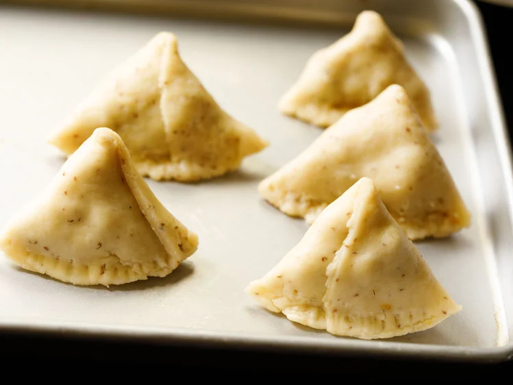

Samosa Recipe (With Potato & Green Peas)
Flaky and crunchy fried Samosa are one of the most popular street food snack in North Indian cuisine. They feature a pastry-like crust but are filled with savory and spiced potato and green peas for a hearty, delicious snack. This step-by-step recipe guide will help you to make the flakiest, tastiest, absolutely best Punjabi Samosa or Aloo Samosa from scratch!

How to Make Punjabi Samosa
Below is my complete step-by-step guide with photos for making the best Punjabi Samosa recipe from scratch. You start by making the savory filling and pastry dough. Then assemble the Aloo Samosa, fry, and enjoy with your favorite dipping sauces and chutneys!
Cook Potato & Green Peas
1. The first step is to cook the potatoes and peas for the savory and spiced filling.
To cook the potatoes and peas in a stovetop pressure cooker: Place 3 medium-sized whole potatoes (300 to 450 grams) and 2 to 2.5 cups water in a 3 or 4 litre pressure cooker. On top of the potatoes carefully set a small trivet and pressure cooker-safe bowl with ½ cup green peas. Pressure cook for 5 to 6 whistles or 7 to 8 minutes on medium to medium-high flame.
If using an Instant Pot: Place 3 medium-sized whole potatoes in the steel insert of a 6 quart IP. Add 2 cups water. Place a trivet on top of the potatoes, and on top of the trivet set a bowl with ½ cup of green peas. Pressure cook on high for 20 to 25 minutes.
2. For the stovetop pressure cooker, remove the lid after all the pressure falls in the cooker.
For the Instant Pot, do a quick pressure release after 5 to 7 minutes. Check with a knife or fork to see if the potatoes are cooked well.
The knife or fork should be able to slide through easily if the potatoes are cooked properly.
If the potatoes are undercooked, then cook them for a few more minutes using the pressure cook function. Once done, drain the potatoes and peas in a colander and set aside to cool.
Roast and Powder Spices
3. Next, roast or toast the spices. This will help to release their flavors and should not be skipped!
4. Remove the spices from the heat and allow to cool completely. Then, put them in a spice grinder or small mixer-grinder jar.
5. Grind the toasted spices to a semi-fine powder, and set aside.
Mix 2 teaspoons ground coriander (coriander powder), ½ teaspoon ground cumin (cumin powder), ½ teaspoon ground fennel (fennel powder) and ½ teaspoon garam masala powder in a small bowl.
Add this prepared spice mix at step 9 when the green peas and remaining ground spices are added.
Make Potato Stuffing
6. Peel the skin off of the cooked potatoes, and chop them in ½ to 1 inch cubes.
7. In a small skillet, heat 1 tablespoon oil. When the oil becomes medium hot then reduce the heat to low.
Crackle ½ teaspoon cumin seeds until fragrant. I used mustard oil as it really adds a punch in the stuffing.
You can use neutral oil like sunflower oil, safflower oil, grapeseed oil or canola oil.
8. Keep the heat on low and add 1 teaspoon finely chopped or minced ginger and 2 teaspoons finely chopped green chillies. Sauté for a few seconds until the raw aroma of ginger goes away.

9. Now you can switch off the flame or keep flame to a low. Then add the cooked green peas, ½ teaspoon red chilli powder, 1 pinch of asafoetida (hing), the dry ground spice mix that we made and 1 to 2 teaspoons dry mango powder (amchur).
The mango powder is what gives the Punjabi Samosa filling its signature tangy flavor that balances so well with the savory, spicy flavors of the other stuffing ingredients.
10. Stir together and sauté for a minute. You can add less or more dry mango powder depending upon personal taste.
I added 2 teaspoons as just 1 teaspoon was not quite enough sour flavor for me.
11. Next add potato cubes, salt as required and 1 tablespoon chopped coriander leaves (also known as cilantro) to the skillet.
12. Mix very well and sauté for a minute. Check the taste, and add more of the spices, salt or dry mango powder if needed. Cover and set the filling aside while you make the dough.
Make Samosa Pastry Dough
13. In a large mixing bowl combine 2 cups all-purpose flour (250 grams), 1 teaspoon carom seeds, 1 teaspoon salt and 6 tablespoons ghee (50 grams).
14. With your fingers, mix the ingredients together until they make a breadcrumb-like texture that holds its shape when you press a portion of the mixture.
15. Then, working just a bit at a time, add in 7 to 8 tablespoons water in parts and knead.
You can add 1 to 2 tablespoons extra water if needed if the dough looks floury or dry.
16. Continue kneading to form a firm, tight dough. It should not be soft or sticky. Cover the dough with a moist kitchen towel and let rest for 30 minutes.
In case if your dough becomes too moist or sticky then add a few tablespoons of flour. Mix and knead again to a firm dough.

Assemble & Shape
17. After the dough has rested, divide it into 6 to 7 even pieces. Take each piece and gently roll in your palms first to smooth and soften. Place it on your work surface or on the rolling board.
18. Then roll it with a rolling pin, being mindful to keep the thickness even at 1 mm and not too thin.
19. Cut the with a knife or a pastry cutter, right through the center of the rolled pastry dough.
20. Use a rolling pin to gently flatten the half moon shape to make even.
21. Use a pastry brush to lightly brush the dough with water around all of the edges.
22. Next, fold to join the straight edged side together to form a cone, like shown in the photo below. Be sure to press the edges well so that they are sealed!
22. Next, fold to join the straight edged side together to form a cone, like shown in the photo below. Be sure to press the edges well so that they are sealed!
The cone is now ready to be stuffed with the potato and pea filling.
23. Carefully spoon and lightly pack the prepared potato and pea stuffing into the cone.
Make sure to not over or under-fill to prevent the samosa from bursting during the frying process.
24. Crimp and pinch the edges to close as shown in photo below. This helps the samosa to stand once made.
25. Evenly press all of the edges, making sure there are no cracks in the dough. The edges should be sealed very well so that the stuffing does not come out while frying.
Prepare all the samosa this way as described above, and cover with a moist kitchen napkin to keep them from drying out.
Deep Fry Samosa
The final step to making the best samosa is to fry them to a perfectly crisp golden brown.
Use any neutral flavored oil to deep fry sunflower oil, canola oil, vegetable oil, safflower oil, grapeseed oil are some options.
26. Heat the oil for deep frying in a kadai or pan. Test the oil by adding a small piece of dough – it should come up quickly if the oil is hot enough for frying.
Once the oil becomes medium-hot, gently slide 3 to 4 of the prepared stuffed samosas into the oil, and then immediately reduce the heat to low.
Do not overcrowd the pan to ensure each one of them fries evenly!
27. Fry them on low to medium-low heat, keeping an eye on them so they don’t burn.
28. When one side is pale golden, use tongs or a slotted spoon or skimmer to gently turn each samosa over and continue frying.
This way you will have to turn a couple of times for even cooking. Be gentle and careful while turning them as they are heavy and oil can spill out.
Frying these take a lot of time, so you have to be calm and patient!
29. Fry until each aloo samosa is crisp and golden. The oil will stop sizzling once the samosas are fried well. They will become nicely crisp and golden.
30. Use a skimmer spoon or spider spoon to carefully remove fried samosa from the oil, and place them on paper towels to remove extra oil.
Repeat the frying steps with the remaining batches of Aloo Samosa. Reduce the heat when you begin to fry the next batches. Regulate the heat as needed while frying these.
31. Serve Punjabi Samosa hot or warm or at room temperature with Coriander Chutney or Tamarind Chutney, or with a zesty tomato ketchup.
The pairing of Aloo Samosa with masala chai is irresistible and much loved in India.
You can also serve them with Chole Masala. This dish is popularly known as samosa chole. Another popular chaat snack made with potato samosa is Samosa Chaat.